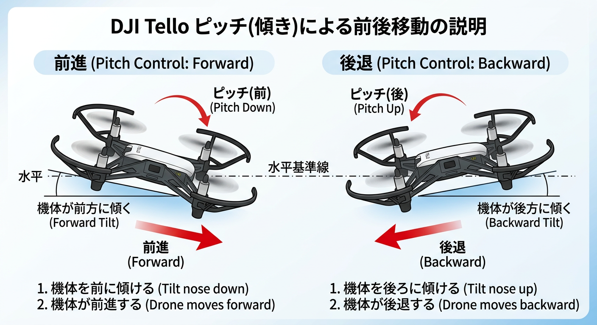
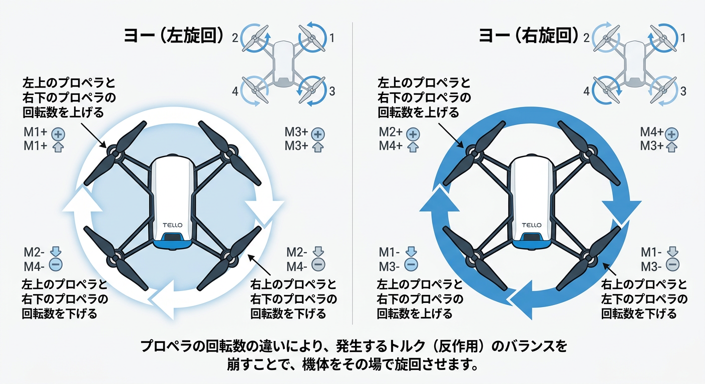

基本操作
| 前進 | W |
| 後退 | S |
| 左移動 | A |
| 右移動 | D |
| 上昇 | ↑ |
| 下降 | ↓ |
| 左旋回 | ← |
| 右旋回 | → |
| 離着陸 | スペース |
注意点
ドローンの操作は、周囲の安全を確認してから行ってください。
また、ドローンのバッテリー残量や通信状態にも注意してください。
操作中にドローンが不安定になった場合は、すぐに着陸させてください。
ドローンの操作には十分な注意が必要です。
特に、周囲の人や物体に注意してください。
機体の角度のお話
ちょっと技術的なお話をします。
ドローンは、機体を傾けることで揚力の向きを変えて移動できます。
他にもヨー(水平軸回転)では、反トルクのためにプロペラの回転速度を変えて姿勢を制御しています。
機体を傾けるときは、上側になる向きのプロペラの回転速度を上げ、下側になる向きのプロペラの回転速度を下げることで、機体が傾くように制御しています。
ヨーの場合は、反トルクを作るために、回転する向きが違うプロペラの回転速度を変えることで、機体が水平軸回転するように制御しています。
つまり、ドローンはプロペラの回転速度を変えることで、機体の傾きや姿勢を制御しているということです。
ピッチとロール
ピッチとは、ドローンの前後の傾きのことを指します。
ピッチを調整することで、ドローンの前進や後退の速度を制御することができます。
ピッチの調整は、ドローンの安定飛行にとって非常に重要です。
このドローンで言うロールとは、ドローンの左右の傾きのことを指します。
ロールを調整することで、ドローンの左右の移動速度を制御することができます。
ロールの調整も、ドローンの安定飛行にとって非常に重要です。

ヨー
ヨーとは、ドローンの水平軸回転のことを指します。
ヨーを調整することで、ドローンの方向転換を制御することができます。
ヨーの調整も、ドローンの安定飛行にとって非常に重要です。
